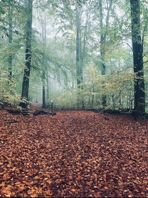
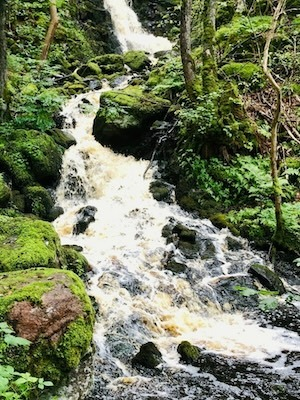

Osbeck's beech forests when you want a nature experience that is out of the ordinary.
Imagine spring's beautiful blooms, summer's exciting nature trails to discover and autumn's beautiful colors.
The natural forest for the whole family who want to see petroglyphs from the past and old villages that existed
with their stone walls that divided lands and fields.
There are beautiful views and barbecue areas that are suitable for bringing either grilled food or coffee.
Osbeck's beech forest for those of you who want to experience southern Swedish nature.

Just above Hasslöv, you can pick both berries and mushrooms of various species, including blueberries,
raspberries, blackberries and rare, but also cloudberries if you're lucky. Scenic area with its nature reserves
and nice views over, among other things, the sea where you can see Denmark. There is also a stream with a beautiful
waterfall that you can see if you like that kind of thing. An adventure for the whole family.
The "Stensån" runs in Hasslöv and you can fish in scenic valleys with a rich bird and animal life.
Stensån is classified as national interest because of its salmon and trout stocks.
Downstream Vindrarp's bridge winds its way through the agricultural landscape to Hasslöv's bridge.
From here it flows calmly in a channel-like course, a result of previous clearings and straightening,
where before that it meandered past Skottorps castle and under the old bridge at the E6.
Fish species that occur are brown trout, sea trout, salmon, perch, pike, whiting, eel, greenling and sea lionfish.
In 1998, approximately 140 salmon were caught. Largest salmon weighed about 12 kg.
Largest sea trout approx. 8 kg. A pleasure for the whole family